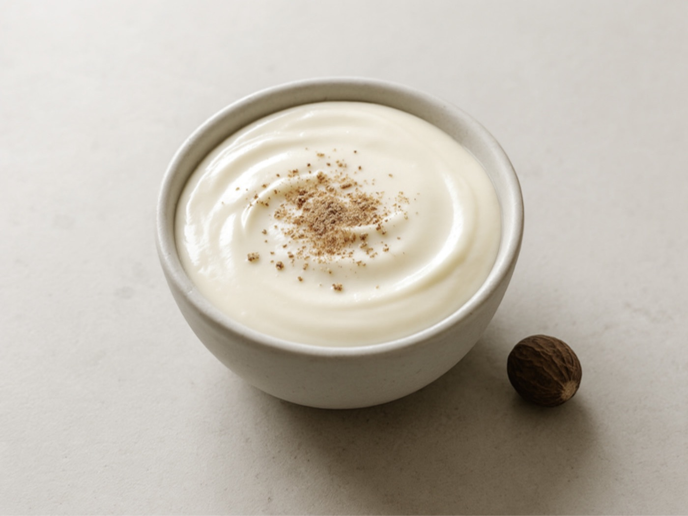

Соуси · № 082
Бешамель
15 хвчас
≈550 млвихід
6інгредієнтів
КБЖВ · ПП-версіяна 2 ст. л. (30 г)
22ккал
1 гбілки
1 гжири
2 гвуглеводи
Класична версія: 40 ккал · Ж 3 г → тут на 45% менше калорій
Уся страва: 585 г · 426 ккал · білки 27 г · жири 15 г · вуглеводи 45 г
На 100 г: 73 ккал · білки 5 г · жири 3 г · вуглеводи 8 гІнгредієнти6
Приготування4 кроки
- Розведіть борошно в 100 мл холодного молока до однорідності.
- Решту молока з олією доведіть майже до кипіння.
- Тонкою цівкою влийте борошняну суміш, безперервно збиваючи, варіть 5–7 хв до загущення.
- Зніміть з вогню, вмішайте сир для кремовості, приправте мускатним горіхом, сіллю й перцем.
КБЖВ по інгредієнтахуся страва
| Продукт | г | ккал | Б | Ж | В |
|---|---|---|---|---|---|
| Молоко 1,5% | 500 | 220 | 15 | 7,5 | 23,5 |
| Борошно пшеничне | 30 | 100 | 3,1 | 0,3 | 21 |
| Кисломолочний сир 5% | 50 | 61 | 8,6 | 2,5 | 0,9 |
| Оливкова олія | 5 | 45 | 0 | 5 | 0 |
| Разом · 585 г | 426 | 27 | 15 | 45 | |
| На 100 г | 73 | 5 | 3 | 8 | |
| На 2 ст. л. (30 г) | 22 | 1 | 1 | 2 |